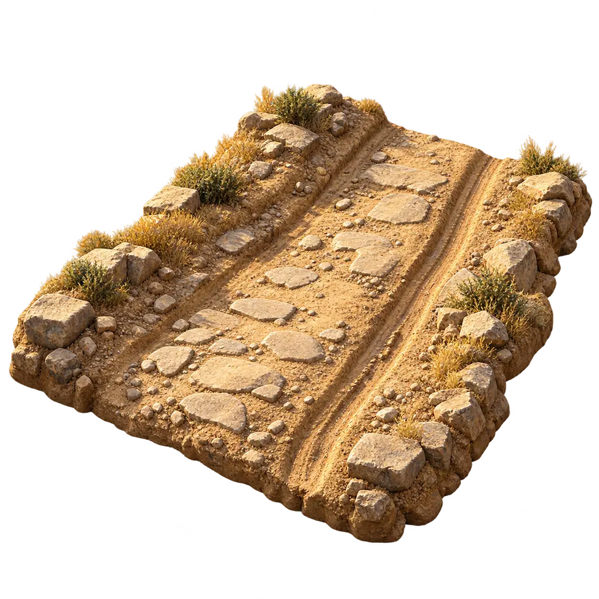
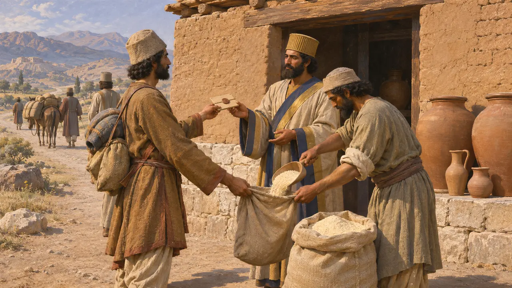
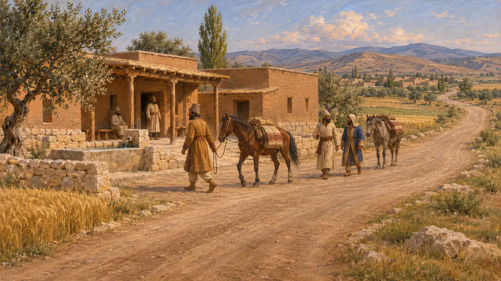
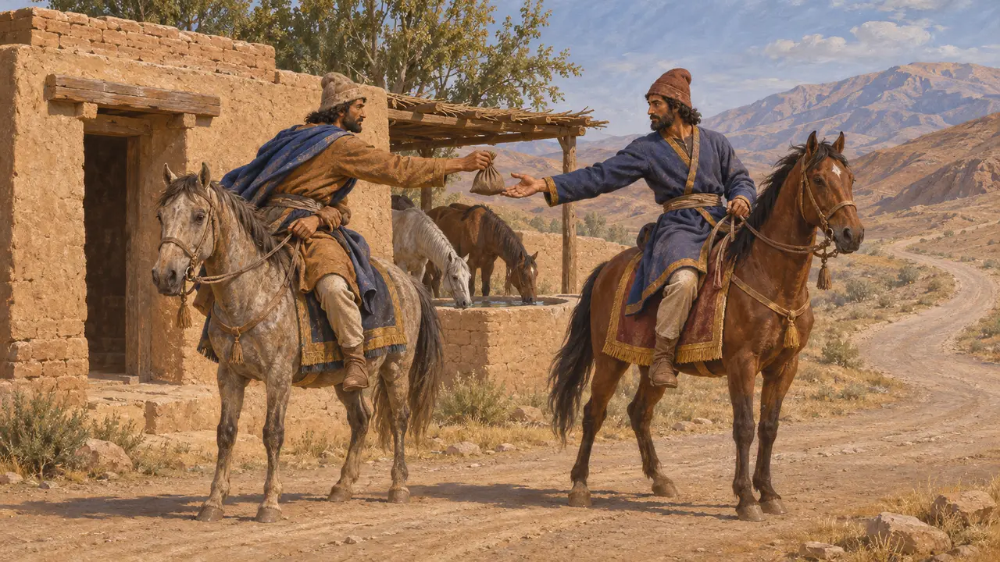
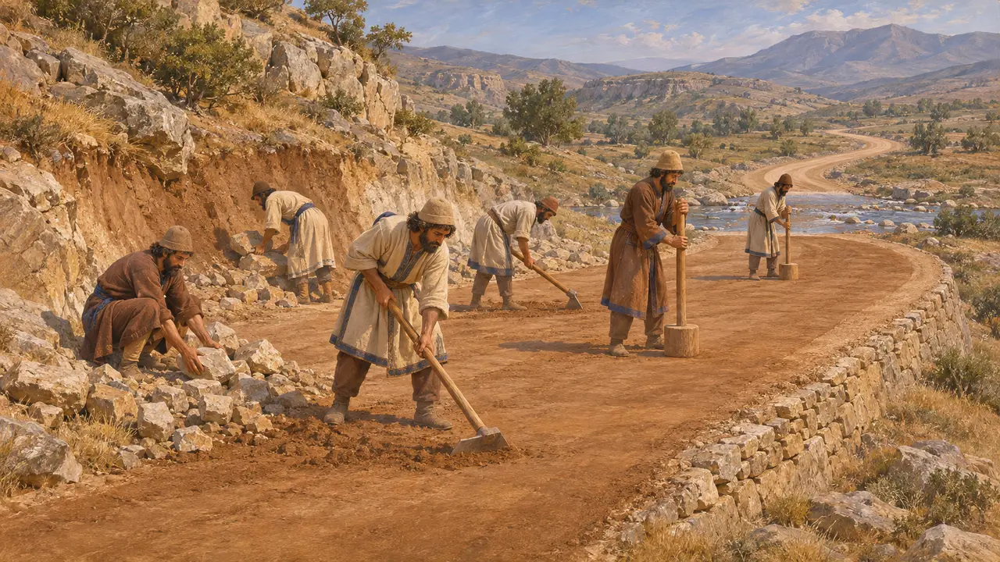
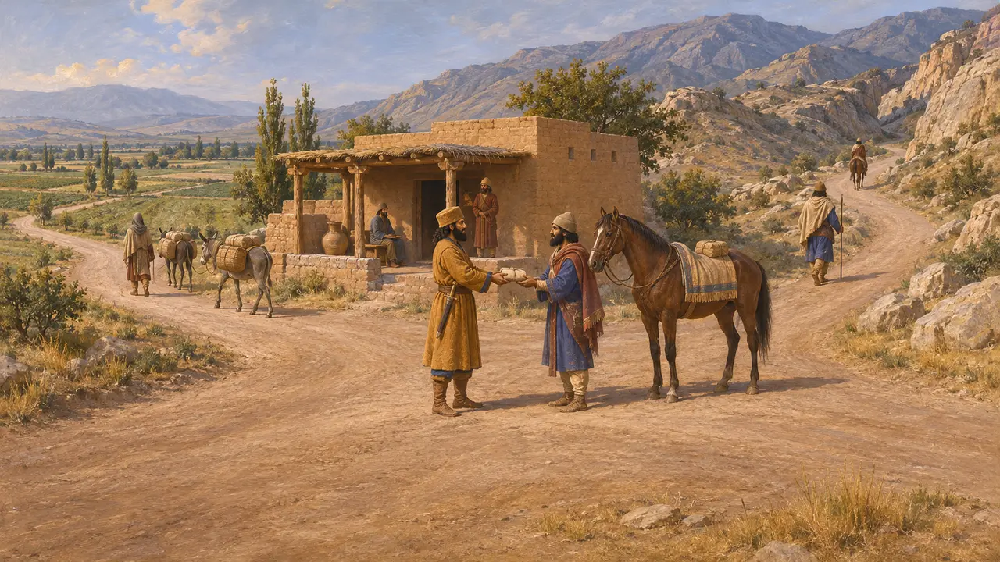

Camino
Sendas y red de caminos del Rey, imperio aqueménida, siglos VI-V a. e. c.
Los caminos mantenían unido el Imperio persa. La mayoría eran pistas de tierra niveladas, no calzadas pavimentadas, pero los funcionarios del Rey los gestionaban como un sistema, con postas, guías y puntos de raciones. Por ellos circulaban correos, funcionarios, trabajadores y ejércitos entre Sardes, Susa, Persépolis y las satrapías lejanas, y los registros de ese tráfico se cuentan entre las mejores pruebas de cómo funcionaba el imperio.
En el juego: En el juego, los caminantes, los carros y los inmigrantes solo pueden desplazarse por caminos. Es una simplificación: en realidad, viajeros, pastores y soldados también atravesaban campo abierto, y la mayoría de los caminos persas eran pistas despejadas más que vías pavimentadas.

Raciones para los viajeros en el camino
En los documentosLas tablillas de la Fortificación de Persépolis, registros de arcilla de entre aproximadamente el 509 a. e. c. y el 493 a. e. c., enumeran raciones de harina, cerveza y vino entregadas a viajeros en las postas de los caminos. Muchos viajeros llevaban una autorización sellada del Rey, de un sátrapa o de un alto funcionario, que les daba derecho a recibir provisiones. Las tablillas mencionan viajes entre Persépolis y Susa y hacia lugares tan lejanos como Sardes, Egipto, Aracosia y la India.
R. T. Hallock, Persepolis Fortification Tablets, 1969

El camino de Sardes a Susa
Relato antiguoHeródoto describe un camino de Sardes a Susa con postas reales y buenos alojamientos a lo largo de todo su recorrido, que atravesaba tierras pobladas y seguras. Cuenta 111 postas en unas 450 parasangas y calcula el viaje en unos noventa días a paso constante. Sus cifras son redondeadas y esquemáticas, y se desconoce su fuente, pero muestran cómo veía el camino un escritor griego del siglo V.
Herodotus 5.52-54

Correos y relevos
Relato antiguoHeródoto cuenta que los persas enviaban los mensajes reales mediante relevos de jinetes, con un hombre y un caballo apostados para cada jornada de camino, de modo que nada los detenía. Más tarde, Jenofonte atribuye a Ciro la creación de este sistema, pero su Ciropedia es un retrato idealizado y no puede tomarse como un testimonio fiable de quién lo inició.
Herodotus 8.98; Xenophon, Cyropaedia 8.6

Cómo se construían los caminos
En disputaLos caminos persas eran en su mayoría de tierra apisonada, desbrozada y nivelada, con vados, barcas de paso y algunos tramos tallados en la roca o sobre terraplenes donde el terreno lo exigía. Las prospecciones en Fars y en otros lugares han identificado posibles tramos de caminos antiguos, pero datar una senda o una calzada en época aqueménida resulta difícil. Los historiadores siguen debatiendo además el trazado exacto del Camino Real de Heródoto a través de Anatolia, y si discurría por una ruta septentrional o más al sur.
D. F. Graf, The Persian Royal Road System, 1994

Una red, no un solo camino
En disputaLos estudiosos modernos subrayan que el camino de Sardes era solo un ramal de una red más amplia que unía Pérside, Susa, Babilonia, Ecbatana, Egipto y las satrapías orientales. Las tablillas de la Fortificación muestran documentos de viaje expedidos lejos de Persépolis, pero aún se debate hasta qué punto la red se gestionaba desde el centro y cuánto quedaba en manos de los sátrapas y los funcionarios locales.
P. Briant, From Cyrus to Alexander, 2002
Fuentes
- R. T. Hallock, Persepolis Fortification Tablets, 1969
- Herodotus 5.52-54
- Herodotus 8.98
- P. Briant, From Cyrus to Alexander, 2002
- D. F. Graf, The Persian Royal Road System, 1994
- Xenophon, Cyropaedia 8.6